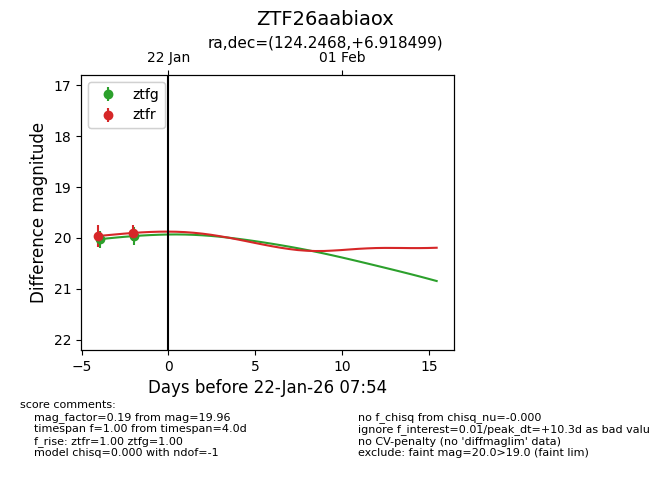
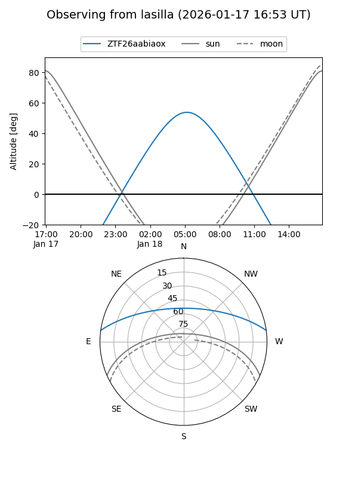
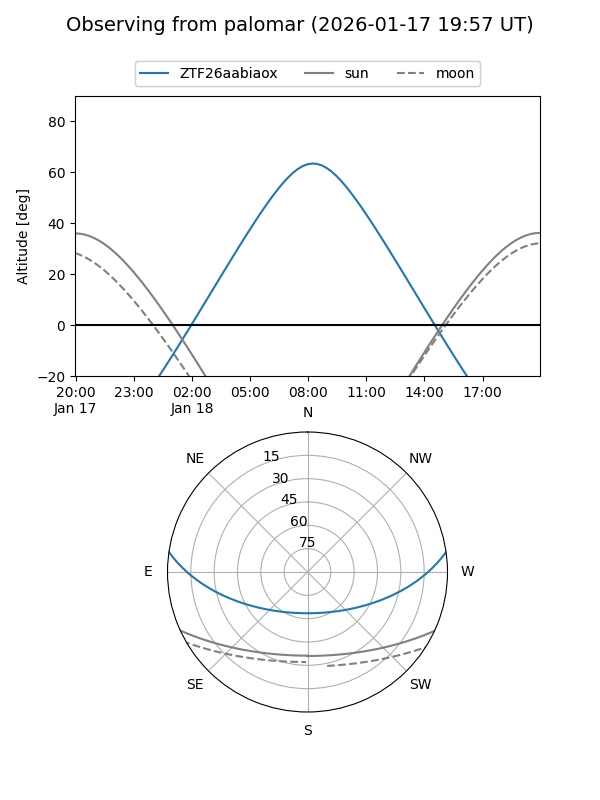

ZTF26aabiaox
Target ZTF26aabiaox at 2026-01-18 07:50
Aliases and brokers:
FINK: link
Lasair: link
ALeRCE: link
alt names
ZTF26aabiaox (ztf,fink_ztf)
Coordinates:
equatorial (ra, dec) = 124.2468,+6.91850
equatorial (HMS+DMS) = 08:16:59.23,+06:55:06.60
galactic (l, b) = (216.5141,+22.15513)
Flags:
Photometry:
last ztfr=19.96
1 ztfr detections
Lightcurve

Visibility


Additional plots